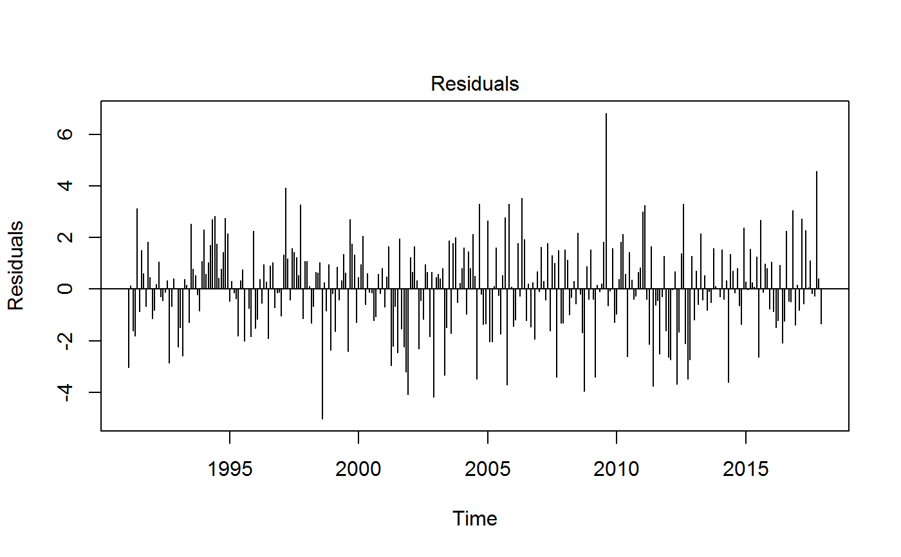
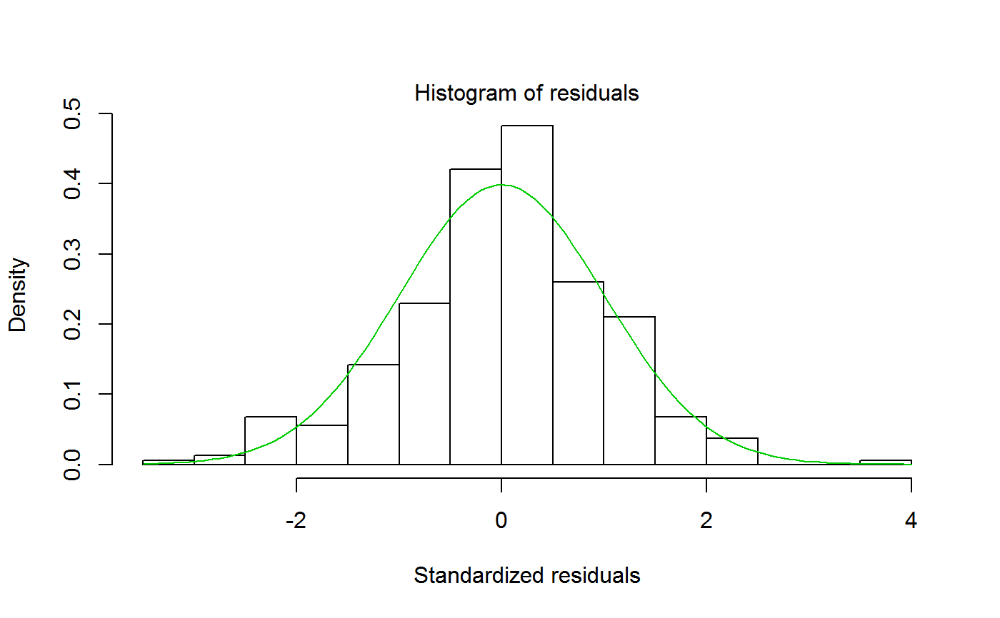
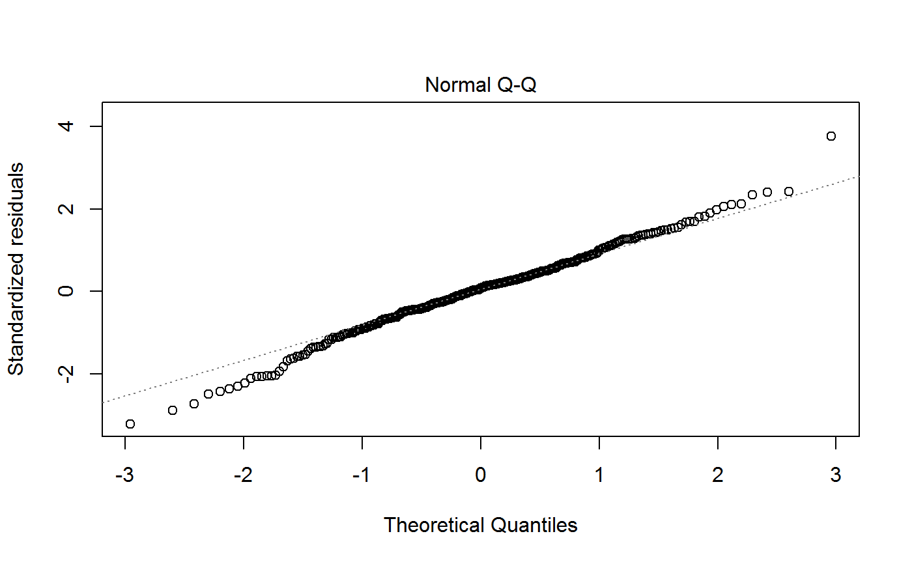
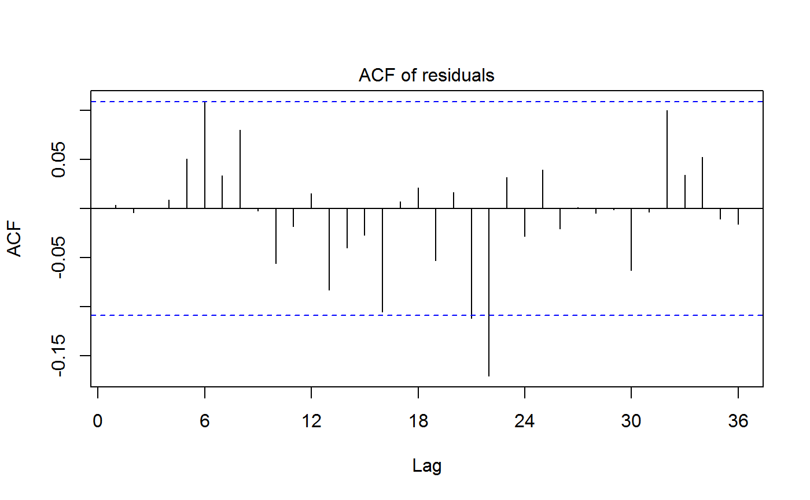
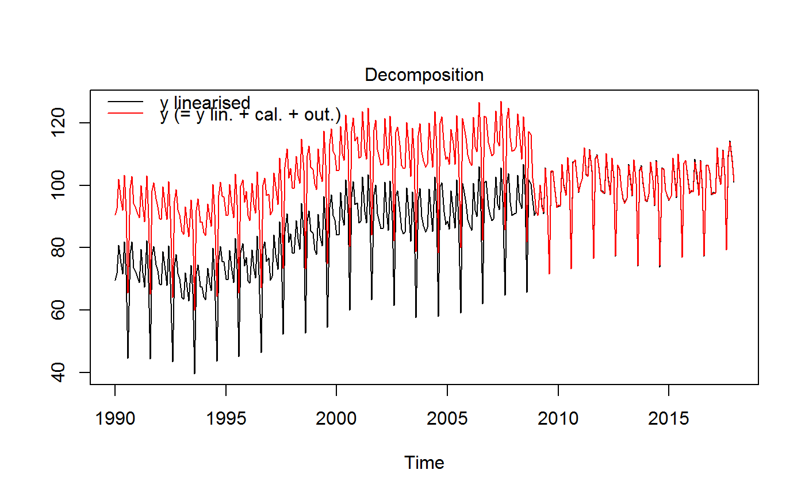
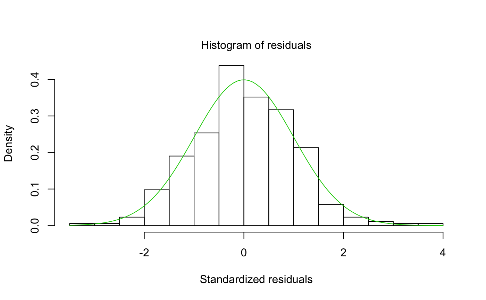
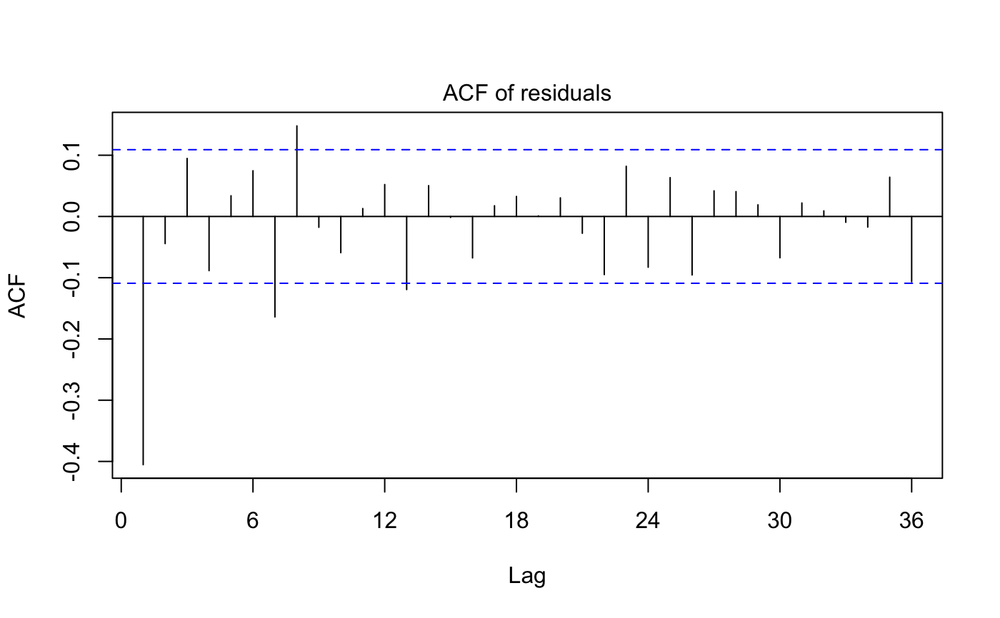
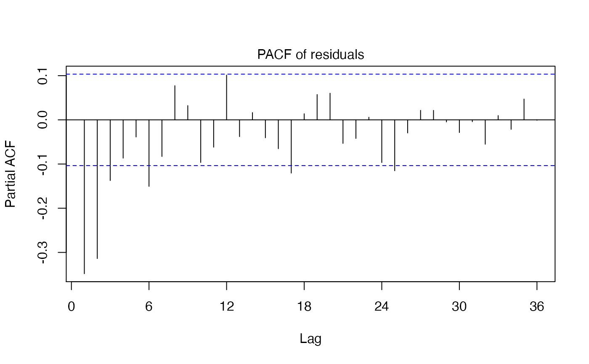
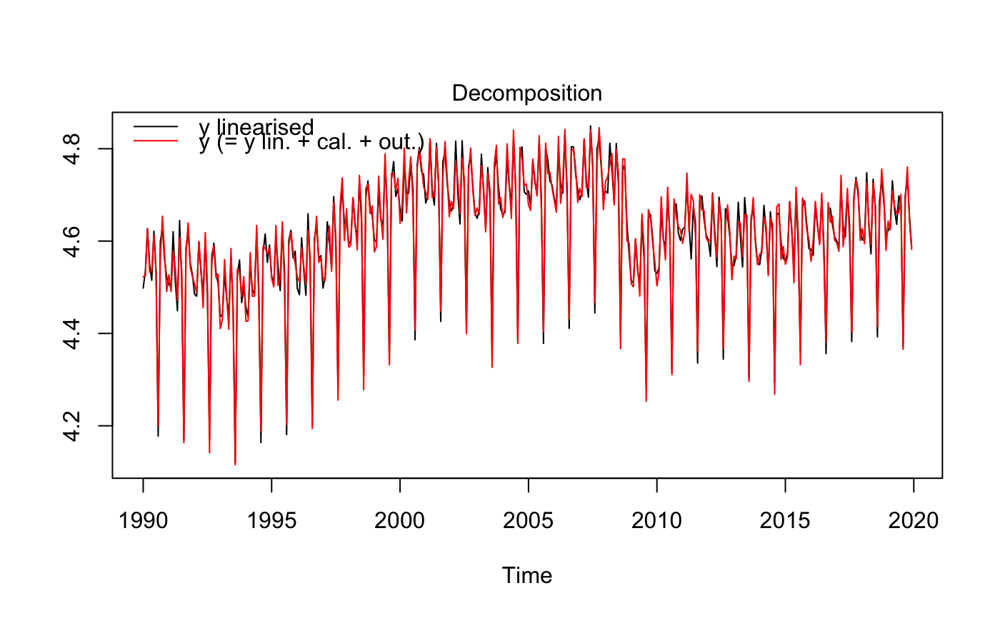

RegARIMA model, pre-adjustment in X13 and TRAMO-SEATS
Source:R/jregarima.R, R/regarima.R
regarima.Rdregarima/regarima_x13/regarima_tramoseats decomposes the time series in a linear deterministic component and in a stochastic component. The deterministic part of the series can contain outliers, calendar effects and regression effects. The stochastic part is defined by a seasonal multiplicative ARIMA model, as discussed by BOX, G.E.P., and JENKINS, G.M. (1970).
jregarima/jregarima_x13/jregarima_tramoseats does the same computation but returns the Java objects without formatting the output
jregarima(series, spec = NA) jregarima_tramoseats( series, spec = c("TRfull", "TR0", "TR1", "TR2", "TR3", "TR4", "TR5") ) jregarima_x13(series, spec = c("RG5c", "RG0", "RG1", "RG2c", "RG3", "RG4c")) regarima(series, spec = NA) regarima_tramoseats( series, spec = c("TRfull", "TR0", "TR1", "TR2", "TR3", "TR4", "TR5") ) regarima_x13(series, spec = c("RG5c", "RG0", "RG1", "RG2c", "RG3", "RG4c"))
Arguments
| series | a univariate time series |
|---|---|
| spec | model specification. For the function:
|
Value
jregarima/jregarima_x13/jregarima_tramoseats return a jSA object. It contains the Java objects of the result of the preadjustment method without any formatting. Therefore the computation is faster than with regarima/regarima_x13/regarima_tramoseats. The results can the seasonal adjustment can be extract by get_indicators.
regarima/regarima_x13/regarima_tramoseats return an object of class "regarima" and sub-class "X13" or "TRAMO_SEATS". regarima_x13 returns an object of class c("regarima","X13") and regarima_tramoseats an object of class c("regarima","TRAMO_SEATS").
For the function regarima, the sub-class of the object depends on the used method that is defined by the class of the spec object.
An object of class "regarima" is a list containing the following components:
list with the model specification as defined by the spec argument. See also Value of the regarima_spec_x13 and regarima_spec_tramoseats functions.
vector with the orders of the autoregressive (AR), moving average (MA), seasonal AR and seasonal MA processes, as well as with the regular and seasonal differencing orders (P,D,Q) (BP,BD,BQ).
matrix with the regular and seasonal AR and MA coefficients. The matrix contains the estimated coefficients, standard errors and t-statistics values. The estimated coefficients can be also extracted with the function coef (the output includes also the regression coefficients).
matrix with the regression variables (i.e.: mean, calendar effect, outliers and user-defined regressors) coefficients. The matrix contains the estimated coefficients, standard errors and t-statistics values. The estimated coefficients can be also extracted with the function coef (output includes also the arima coefficients).
matrix containing the log-likelihood of the RegARIMA model as well as the associated model selection criteria statistics (AIC, AICC, BIC and BICC) and parameters (np = number of parameters in the likelihood, neffectiveobs = number of effective observations in the likelihood). These statistics can be also extracted with the function logLik.
list containing the information on the model specification after its estimation (spec_rslt), as well as the decomposed elements of the input series (ts matrix, effects). The model specification includes the information on the estimation method (Model) and time span (T.span), whether the original series was log transformed (Log transformation) and details on the regression part of the RegARIMA model; i.e. if it includes a Mean, Trading days effects (if yes, it provides the number of regressors), Leap year effect, Easter effect and whether outliers were detected (Outliers; if yes, it provides the number of outliers). The decomposed elements of the input series contain the linearised series (y_lin) and the deterministic components; i.e.: trading days effect (tde), Easter effect (ee), other moving holidays effect (omhe) and outliers effect (total - out, related to irregular - out_i, related to trend - out_t, related to seasonal - out_s).
the residuals (time series). They can be also extracted with the function residuals.
List containing statistics on the RegARIMA residuals. It provides residuals standard error (st.error) and results for the tests on the normality, independence and linearity of the residuals (tests) - object of class c("regarima_rtests","data.frame").
ts matrix containing the forecast of the original series (fcst) and it's standard error (fcsterr).
Details
In the X13 and TRAMO-SEATS seasonal adjustment the first step consists of pre-adjusting the original series with a RegARIMA model, where the original series is corrected for any deterministic effects and missing observations. This step is also referred as linearization of the original series.
The RegARIMA model (model with ARIMA errors) is specified as below.
$$z_t=y_t\beta+x_t$$
where:
\(z_t\) - is the original series;
\(\beta = (\beta_1,...,\beta_n)\) - a vector of regression coefficients;
\(y_t = (y_{1t},...,y_{nt})\) - \(n\) regression variables (outliers, calendar effects, user-defined variables);
\(x_t\) - a disturbance that follows the general ARIMA process: \(\phi(B)\delta(B)x_t=\theta(B)a_t\); \(\phi(B), \delta(B)\) and \(\theta(B)\) are the finite polynomials in \(B\); \(a_t\) is a white-noise variable with zero mean and a constant variance.
The polynomial \(\phi(B)\) is a stationary autoregressive (AR) polynomial in \(B\), which is a product of the stationary regular AR polynomial in \(B\) and the stationary seasonal polynomial in \(B^s\):
$$\phi(B)=\phi_p(B)\Phi_{bp}(B^s)=(1+\phi_1B+...+\phi_pB^p)(1+\Phi_1B^s+...+\Phi_{bp}B^{bps})$$
where:
\(p\) - number of regular AR terms (here and in 'JDemetra+' \(p \le 3\));
\(bp\) - number of seasonal AR terms (here and in 'JDemetra+' \(bp \le 1\));
\(s\) - number of observations per year (frequency of the time series).
The polynomial \(\theta(B)\) is an invertible moving average (MA) polynomial in \(B\), which is a product of the invertible regular MA polynomial in \(B\) and the invertible seasonal MA polynomial in \(B^s\):
$$\theta(B)=\theta_q(B)\Theta_{bq}(B^s)=(1+\theta_1B+...+\theta_qB^q)(1+\Theta_1B^s+...+\Theta_{bq}B^{bqs})$$
where:
\(q\) - number of regular MA terms (here and in 'JDemetra+' \(q \le 3\));
\(bq\) - number of seasonal MA terms (here and in 'JDemetra+' \(bq \le 1\));
The polynomial \(\delta(B)\) is the non-stationary AR polynomial in \(B\) (unit roots):
$$\delta(B)=(1-B)^d(1-B^s)^{d_s}$$
where:
\(d\) - regular differencing order (here and in 'JDemetra+' \(d \le 1\));
\(d_s\) - seasonal differencing order (here and in 'JDemetra+' \(d_s \le 1\));
Notations used for AR and MA processes, model denoted as ARIMA \((P,D,Q)(BP,BD,BQ)\), are consistent with those in 'JDemetra+'.
As regards the available predefined 'JDemetra+' X13 and TRAMO-SEATS model specifications, they are described in the tables below.
X13:
| Identifier | | Log/level detection | | Outliers detection | | Calendar effects | | ARIMA | RG0 | | NA | |
| NA | | NA | | Airline(+mean) | RG1 | | automatic | | AO/LS/TC | | NA | |
| Airline(+mean) | RG2c | | automatic | | AO/LS/TC | | 2 td vars + Easter | | Airline(+mean) | RG3 | |
| automatic | | AO/LS/TC | | NA | | automatic | RG4c | | automatic | | AO/LS/TC | |
| 2 td vars + Easter | | automatic | RG5c | | automatic | | AO/LS/TC | | 7 td vars + Easter | | automatic |
TRAMO-SEATS:
| Identifier | | Log/level detection | | Outliers detection | | Calendar effects | | ARIMA | TR0 | | NA | | NA | |
| NA | | Airline(+mean) | TR1 | | automatic | | AO/LS/TC | | NA | | Airline(+mean) | TR2 | |
| automatic | | AO/LS/TC | | 2 td vars + Easter | | Airline(+mean) | TR3 | | automatic | | AO/LS/TC | | NA | |
| automatic | TR4 | | automatic | | AO/LS/TC | | 2 td vars + Easter | | automatic | TR5 | | automatic | |
| AO/LS/TC | | 7 td vars + Easter | | automatic | TRfull | | automatic | | AO/LS/TC | | automatic | | automatic |
References
Info on 'JDemetra+', usage and functions: https://ec.europa.eu/eurostat/cros/content/documentation_en
BOX G.E.P. and JENKINS G.M. (1970), "Time Series Analysis: Forecasting and Control", Holden-Day, San Francisco.
BOX G.E.P., JENKINS G.M., REINSEL G.C. and LJUNG G.M. (2015), "Time Series Analysis: Forecasting and Control", John Wiley & Sons, Hoboken, N. J., 5th edition.
Examples
# \donttest{ # X13 method myseries <- ipi_c_eu[, "FR"] myreg <- regarima_x13(myseries, spec ="RG5c") summary(myreg)#> y = regression model + arima (2, 1, 1, 0, 1, 1) #> #> Model: RegARIMA - X13 #> Estimation span: from 1-1990 to 12-2019 #> Log-transformation: yes #> Regression model: no mean, trading days effect(6), no leap year effect, Easter effect, outliers(3) #> #> Coefficients: #> ARIMA: #> Estimate Std. Error T-stat Pr(>|t|) #> Phi(1) 0.02578 0.11820 0.218 0.8275 #> Phi(2) 0.15940 0.07819 2.039 0.0422 * #> Theta(1) -0.51733 0.11274 -4.589 6.24e-06 *** #> BTheta(1) -0.70304 0.04113 -17.093 < 2e-16 *** #> --- #> Signif. codes: 0 ‘***’ 0.001 ‘**’ 0.01 ‘*’ 0.05 ‘.’ 0.1 ‘ ’ 1 #> #> Regression model: #> Estimate Std. Error T-stat Pr(>|t|) #> Monday 0.004967 0.002152 2.309 0.021556 * #> Tuesday 0.008415 0.002160 3.895 0.000118 *** #> Wednesday 0.010614 0.002165 4.903 1.45e-06 *** #> Thursday 0.002060 0.002157 0.955 0.340296 #> Friday 0.008274 0.002162 3.826 0.000154 *** #> Saturday -0.016328 0.002149 -7.599 2.80e-13 *** #> Easter [1] -0.021145 0.004247 -4.979 1.01e-06 *** #> AO (5-2011) 0.128134 0.017206 7.447 7.62e-13 *** #> LS (11-2008) -0.087008 0.016956 -5.131 4.80e-07 *** #> LS (1-2009) -0.068435 0.016951 -4.037 6.66e-05 *** #> --- #> Signif. codes: 0 ‘***’ 0.001 ‘**’ 0.01 ‘*’ 0.05 ‘.’ 0.1 ‘ ’ 1 #> #> #> Residual standard error: 0.02041 on 332 degrees of freedom #> Log likelihood = 853.7, aic = 1528, aicc = 1530, bic(corrected for length) = -7.547 #>plot(myreg)myspec1 <- regarima_spec_x13(myreg, tradingdays.option = "WorkingDays") myreg1 <- regarima(myseries, myspec1) myspec2 <- regarima_spec_x13(myreg, usrdef.outliersEnabled = TRUE, usrdef.outliersType = c("LS", "AO"), usrdef.outliersDate = c("2008-10-01", "2002-01-01"), usrdef.outliersCoef = c(36, 14), transform.function = "None") myreg2 <- regarima(myseries, myspec2) myreg2#> y = regression model + arima (2, 1, 1, 0, 1, 1) #> Log-transformation: no #> Coefficients: #> Estimate Std. Error #> Phi(1) 0.1057 0.114 #> Phi(2) 0.2141 0.076 #> Theta(1) -0.4709 0.111 #> BTheta(1) -0.6642 0.043 #> #> Estimate Std. Error #> Monday 0.58039 0.234 #> Tuesday 0.82241 0.235 #> Wednesday 1.10804 0.234 #> Thursday 0.09871 0.232 #> Friday 0.89917 0.233 #> Saturday -1.62006 0.231 #> Leap year 2.14549 0.731 #> Easter [1] -2.34335 0.456 #> AO (9-2008) 32.07187 2.931 #> LS (9-2008) -57.03600 2.631 #> AO (5-2011) 13.22101 1.841 #> TC (9-2008) 23.33640 3.967 #> TC (12-2001) -20.56517 2.911 #> AO (12-2001) 17.24940 2.981 #> TC (2-2002) 10.70687 1.939 #> #> Fixed outliers: #> Coefficients #> LS (10-2008) 36 #> AO (1-2002) 14 #> #> #> Residual standard error: 2.185 on 327 degrees of freedom #> Log likelihood = -767.3, aic = 1575 aicc = 1577, bic(corrected for length) = 1.883 #>myspec3 <- regarima_spec_x13(myreg, automdl.enabled = FALSE, arima.p = 1, arima.q = 1, arima.bp = 0, arima.bq = 1, arima.coefEnabled = TRUE, arima.coef = c(-0.8, -0.6, 0), arima.coefType = c(rep("Fixed", 2), "Undefined")) s_arimaCoef(myspec3)#> Type Value #> Phi(1) Fixed -0.8 #> Theta(1) Fixed -0.6 #> BTheta(1) Undefined 0.0#> y = regression model + arima (1, 1, 1, 0, 1, 1) #> #> Model: RegARIMA - X13 #> Estimation span: from 1-1990 to 12-2019 #> Log-transformation: yes #> Regression model: no mean, trading days effect(6), no leap year effect, Easter effect, outliers(1) #> #> Coefficients: #> ARIMA: #> Estimate Std. Error T-stat Pr(>|t|) #> Phi(1) -0.80000 0.00000 NA NA #> Theta(1) -0.60000 0.00000 NA NA #> BTheta(1) -0.69331 0.04134 -16.77 <2e-16 *** #> --- #> Signif. codes: 0 ‘***’ 0.001 ‘**’ 0.01 ‘*’ 0.05 ‘.’ 0.1 ‘ ’ 1 #> #> Regression model: #> Estimate Std. Error T-stat Pr(>|t|) #> Monday 0.005835 0.001826 3.196 0.00152 ** #> Tuesday 0.007964 0.001836 4.338 1.89e-05 *** #> Wednesday 0.010841 0.001833 5.915 7.96e-09 *** #> Thursday 0.001883 0.001834 1.027 0.30522 #> Friday 0.009833 0.001836 5.355 1.56e-07 *** #> Saturday -0.018229 0.001815 -10.046 < 2e-16 *** #> Easter [1] -0.020470 0.003538 -5.786 1.61e-08 *** #> AO (5-2011) 0.144191 0.015632 9.224 < 2e-16 *** #> --- #> Signif. codes: 0 ‘***’ 0.001 ‘**’ 0.01 ‘*’ 0.05 ‘.’ 0.1 ‘ ’ 1 #> #> #> Residual standard error: 0.02585 on 337 degrees of freedom #> Log likelihood = 772, aic = 1681, aicc = 1682, bic(corrected for length) = -7.159 #>plot(myreg3)# TRAMO-SEATS method myspec <- regarima_spec_tramoseats("TRfull") myreg <- regarima(myseries, myspec) myreg#> y = regression model + arima (2, 1, 0, 0, 1, 1) #> Log-transformation: yes #> Coefficients: #> Estimate Std. Error #> Phi(1) 0.3858 0.053 #> Phi(2) 0.2428 0.053 #> BTheta(1) -0.7134 0.040 #> #> Estimate Std. Error #> Week days 0.007131 0.000 #> Leap year 0.022154 0.007 #> Easter [6] -0.021360 0.004 #> AO (5-2011) 0.128991 0.017 #> AO (5-2000) 0.057730 0.017 #> #> #> Residual standard error: 0.02174 on 338 degrees of freedom #> Log likelihood = 831.8, aic = 1560 aicc = 1560, bic(corrected for length) = -7.523 #>myspec2 <- regarima_spec_tramoseats(myspec, tradingdays.mauto = "Unused", tradingdays.option = "WorkingDays", easter.type = "Standard", automdl.enabled = FALSE, arima.mu = TRUE) myreg2 <- regarima(myseries, myspec2) var1 <- ts(rnorm(length(myseries))*10, start = start(myseries), frequency = 12) var2 <- ts(rnorm(length(myseries))*100, start = start(myseries), frequency = 12) var <- ts.union(var1, var2) myspec3 <- regarima_spec_tramoseats(myspec, usrdef.varEnabled = TRUE, usrdef.var = var) s_preVar(myspec3)#> $series #> var1 var2 #> Jan 1990 -14.00043517 -34.3831481 #> Feb 1990 2.55317055 106.2876458 #> Mar 1990 -24.37263611 81.3058204 #> Apr 1990 -0.05571287 180.3483361 #> May 1990 6.21552721 -10.5068694 #> Jun 1990 11.48411606 98.2453362 #> Jul 1990 -18.21817661 -171.3302622 #> Aug 1990 -2.47325302 -83.2019527 #> Sep 1990 -2.44199607 110.0491882 #> Oct 1990 -2.82705449 -17.3820106 #> Nov 1990 -5.53699384 17.8812018 #> Dec 1990 6.28982042 -69.8429449 #> Jan 1991 20.65024895 -96.0449159 #> Feb 1991 -16.30989402 -97.5423042 #> Mar 1991 5.12426950 -33.8576503 #> Apr 1991 -18.63011492 115.2347074 #> May 1991 -5.22012515 40.5101183 #> Jun 1991 -0.52601910 -47.0922497 #> Jul 1991 5.42996343 -13.3251019 #> Aug 1991 -9.14074827 122.6682356 #> Sep 1991 4.68154420 33.2943995 #> Oct 1991 3.62951256 -34.7088466 #> Nov 1991 -13.04543545 -9.8550690 #> Dec 1991 7.37776321 3.4766060 #> Jan 1992 18.88504929 38.6127022 #> Feb 1992 -0.97445104 2.0831228 #> Mar 1992 -9.35847354 0.7586777 #> Apr 1992 -0.15950311 93.0844030 #> May 1992 -8.26788954 -68.4749941 #> Jun 1992 -15.12399651 33.7401513 #> Jul 1992 9.35363190 -41.2137704 #> Aug 1992 1.76488611 93.4261130 #> Sep 1992 2.43685465 184.0316741 #> Oct 1992 16.23548883 -70.4819663 #> Nov 1992 1.12038083 0.8510312 #> Dec 1992 -1.33997013 203.4189886 #> Jan 1993 -19.10087468 -134.1686068 #> Feb 1993 -2.79237242 115.8979182 #> Mar 1993 -3.13445978 -20.3208958 #> Apr 1993 10.67307879 -37.8028555 #> May 1993 0.70034850 173.6111043 #> Jun 1993 -6.39123324 -84.5247816 #> Jul 1993 -0.49964899 -96.1571493 #> Aug 1993 -2.51483443 101.7491053 #> Sep 1993 4.44797116 -149.6053742 #> Oct 1993 27.55417575 -118.4818730 #> Nov 1993 0.46531380 63.0234373 #> Dec 1993 5.77709069 210.1252514 #> Jan 1994 1.18194874 -61.3736810 #> Feb 1994 -19.11720491 -163.4638272 #> Mar 1994 8.62086482 -1.0441117 #> Apr 1994 -2.43236740 -65.6506139 #> May 1994 -2.06087195 -66.9533441 #> Jun 1994 0.19177592 -47.8589028 #> Jul 1994 0.29560754 131.9456316 #> Aug 1994 5.49827542 63.6562761 #> Sep 1994 -22.74114857 51.4327782 #> Oct 1994 26.82557184 -175.1375113 #> Nov 1994 -3.61221255 89.3597518 #> Dec 1994 2.13355750 22.3038372 #> Jan 1995 10.74345882 58.0816593 #> Feb 1995 -6.65088249 -17.7821421 #> Mar 1995 11.13952419 74.0966708 #> Apr 1995 -2.45896412 -99.7443079 #> May 1995 -11.77563309 -293.8977561 #> Jun 1995 -9.75850616 71.9015661 #> Jul 1995 10.65057320 -69.8005041 #> Aug 1995 1.31670635 -189.4125843 #> Sep 1995 4.88628809 7.6299249 #> Oct 1995 -16.99450568 87.5308501 #> Nov 1995 -14.70736306 45.3827393 #> Dec 1995 2.84150344 -85.0716906 #> Jan 1996 13.37320413 56.6201613 #> Feb 1996 2.36696283 115.2211954 #> Mar 1996 13.18293384 -75.6197377 #> Apr 1996 5.23909788 -48.9258334 #> May 1996 6.06748047 -116.6052337 #> Jun 1996 -1.09935672 -47.9668950 #> Jul 1996 1.72181715 11.5348218 #> Aug 1996 -0.90327287 -176.8048407 #> Sep 1996 19.24343341 -140.7638919 #> Oct 1996 12.98392759 70.9178461 #> Nov 1996 7.48791268 -124.0842940 #> Dec 1996 5.56224329 -36.8327348 #> Jan 1997 -5.48257264 46.2080093 #> Feb 1997 11.10534893 -32.2833101 #> Mar 1997 -26.12334333 -128.7214810 #> Apr 1997 -1.55693776 -103.0040247 #> May 1997 4.33889790 151.4089316 #> Jun 1997 -3.81951112 34.6903586 #> Jul 1997 4.24187575 177.9441542 #> Aug 1997 10.63101996 38.6630924 #> Sep 1997 10.48712620 -91.8695239 #> Oct 1997 -0.38102895 -158.4336488 #> Nov 1997 4.86148920 -8.4058892 #> Dec 1997 16.72882611 -208.5070889 #> Jan 1998 -3.54361164 0.3567992 #> Feb 1998 9.46347886 -35.5770822 #> Mar 1998 13.16826356 114.6359751 #> Apr 1998 -2.96640025 -22.1188446 #> May 1998 -3.87213575 101.8179021 #> Jun 1998 -7.85432656 -26.3719295 #> Jul 1998 -10.56736867 165.8542305 #> Aug 1998 -7.95541430 -77.4086771 #> Sep 1998 -17.56275428 -92.3937880 #> Oct 1998 -6.90537897 -27.5533378 #> Nov 1998 -5.58541994 -59.3399688 #> Dec 1998 -5.36663326 -12.2285891 #> Jan 1999 2.27127133 117.9784246 #> Feb 1999 9.78454920 64.1037374 #> Mar 1999 -2.08882651 -62.9588508 #> Apr 1999 -13.99410460 -80.7734971 #> May 1999 2.58537288 -86.0489929 #> Jun 1999 -4.41799453 -216.9238693 #> Jul 1999 5.68599861 -137.5836518 #> Aug 1999 21.26850459 -49.3132472 #> Sep 1999 4.24858441 -58.1652027 #> Oct 1999 -16.84281532 -16.7229304 #> Nov 1999 2.49401784 48.5993129 #> Dec 1999 10.72838252 -133.3395796 #> Jan 2000 20.39369263 -26.1965625 #> Feb 2000 4.49453778 65.2386303 #> Mar 2000 13.91814046 74.8854971 #> Apr 2000 4.26566547 89.6560285 #> May 2000 1.07583992 148.9300424 #> Jun 2000 0.22294733 -65.9403481 #> Jul 2000 6.03611011 53.7283179 #> Aug 2000 -2.62650573 74.6803067 #> Sep 2000 -5.28264082 189.6317084 #> Oct 2000 1.92149422 -206.0070725 #> Nov 2000 -11.46199669 6.4543870 #> Dec 2000 8.46184665 -26.5147403 #> Jan 2001 0.81719629 -44.7344531 #> Feb 2001 -13.05117010 -141.0700927 #> Mar 2001 -9.44912060 -50.6418882 #> Apr 2001 4.54341594 -26.9761838 #> May 2001 -8.55202501 -108.5154918 #> Jun 2001 -2.86895219 36.2159127 #> Jul 2001 8.94961626 -33.5672143 #> Aug 2001 0.67304440 136.3804498 #> Sep 2001 -1.62676337 -71.1524136 #> Oct 2001 -8.27310169 66.2178797 #> Nov 2001 18.76505621 29.1130223 #> Dec 2001 7.66440199 19.7958000 #> Jan 2002 9.79956696 -120.3566106 #> Feb 2002 13.21780992 -3.9817044 #> Mar 2002 -11.19710829 68.6982465 #> Apr 2002 5.14599819 70.5267007 #> May 2002 -15.09099836 99.1441680 #> Jun 2002 15.32741480 114.4248971 #> Jul 2002 4.29147371 -123.8910243 #> Aug 2002 1.22103414 265.4898333 #> Sep 2002 -11.38012401 -15.6917189 #> Oct 2002 -5.58015129 -42.3490117 #> Nov 2002 10.52538537 -19.8387058 #> Dec 2002 6.77683644 -89.4802407 #> Jan 2003 0.38499547 90.4269119 #> Feb 2003 -3.56381187 7.9649210 #> Mar 2003 7.82844102 -125.8827223 #> Apr 2003 8.04411616 102.5685106 #> May 2003 -19.00060823 -73.0778603 #> Jun 2003 9.35784286 -19.0145507 #> Jul 2003 -3.09051503 52.8864693 #> Aug 2003 2.63066677 55.0210535 #> Sep 2003 -17.90591856 54.9684337 #> Oct 2003 -7.88258845 -65.9542372 #> Nov 2003 -11.33021669 5.7421706 #> Dec 2003 3.63652568 -280.8010508 #> Jan 2004 -2.85887914 -91.2259753 #> Feb 2004 5.17669134 -78.2379163 #> Mar 2004 -1.02908670 -66.4104924 #> Apr 2004 -9.74069593 62.6309770 #> May 2004 12.70672301 -50.7248206 #> Jun 2004 9.60864787 27.0361335 #> Jul 2004 7.68721370 46.7476865 #> Aug 2004 10.35930771 72.3994958 #> Sep 2004 -4.73887074 61.3836939 #> Oct 2004 -12.75334875 -61.7869202 #> Nov 2004 -3.05620674 22.0724902 #> Dec 2004 22.11769487 112.7926598 #> Jan 2005 -10.41668381 181.3454336 #> Feb 2005 -11.46523850 -8.3825685 #> Mar 2005 -16.75327303 136.7706666 #> Apr 2005 15.25938655 -62.7434620 #> May 2005 5.54185515 -21.6629150 #> Jun 2005 19.93110265 -68.3713824 #> Jul 2005 -1.54120740 -44.4702734 #> Aug 2005 25.64408338 60.6489806 #> Sep 2005 10.61999145 62.4183075 #> Oct 2005 11.42694878 -69.5431074 #> Nov 2005 11.23838843 -78.3639078 #> Dec 2005 -3.97001493 -95.3123859 #> Jan 2006 -8.23261151 179.2756071 #> Feb 2006 -5.78884625 34.8976696 #> Mar 2006 17.63789378 25.9103768 #> Apr 2006 1.32992146 -80.5951897 #> May 2006 3.76499328 10.5664701 #> Jun 2006 11.38707653 -33.3599682 #> Jul 2006 12.41263075 164.1847970 #> Aug 2006 6.12090945 -64.3905859 #> Sep 2006 -4.29380087 58.7020562 #> Oct 2006 13.60461327 -15.0403088 #> Nov 2006 -0.70857431 -171.0821848 #> Dec 2006 -2.72153684 143.1032558 #> Jan 2007 -24.46680029 -264.5212268 #> Feb 2007 0.65486641 -103.2457405 #> Mar 2007 -10.98508902 -70.7466431 #> Apr 2007 -6.33178176 -70.0560014 #> May 2007 -20.63654451 53.7885439 #> Jun 2007 26.48932029 -31.6332175 #> Jul 2007 -11.53398386 -83.9622754 #> Aug 2007 -3.40637876 -135.4928062 #> Sep 2007 7.86362576 -81.7568272 #> Oct 2007 -12.70513110 -63.4400003 #> Nov 2007 5.42141549 81.5949433 #> Dec 2007 0.75105900 30.2795706 #> Jan 2008 5.58514422 180.7086625 #> Feb 2008 4.15406399 -89.4026756 #> Mar 2008 -14.52299769 -4.6428211 #> Apr 2008 9.41206122 -47.1179138 #> May 2008 -3.38935872 -52.6692630 #> Jun 2008 -0.75574247 -9.5134908 #> Jul 2008 0.40204392 -249.5364809 #> Aug 2008 1.24301066 16.6889217 #> Sep 2008 -9.98432551 35.0492384 #> Oct 2008 12.33390065 143.3701009 #> Nov 2008 3.40424488 76.5906803 #> Dec 2008 -4.72702482 116.7520670 #> Jan 2009 7.08753061 -13.6943429 #> Feb 2009 -15.28958715 -51.4902044 #> Mar 2009 2.37425345 151.9744468 #> Apr 2009 -13.12814246 -32.8491678 #> May 2009 7.47028587 -5.3671506 #> Jun 2009 -15.62518435 -56.3524635 #> Jul 2009 0.71053360 -74.3908963 #> Aug 2009 -6.39534770 -10.9041651 #> Sep 2009 -8.45195739 -56.0829227 #> Oct 2009 6.75244698 18.8001549 #> Nov 2009 11.53375794 74.8850942 #> Dec 2009 -16.86504742 -191.6538316 #> Jan 2010 -9.02814949 23.6095847 #> Feb 2010 13.17633698 62.8953415 #> Mar 2010 11.00189745 41.7925676 #> Apr 2010 12.03767839 197.6758477 #> May 2010 -14.31270777 -50.6286298 #> Jun 2010 13.82910861 -110.9968853 #> Jul 2010 0.03125940 -94.8705723 #> Aug 2010 -0.77886824 47.6843757 #> Sep 2010 4.41428226 -79.5201560 #> Oct 2010 1.28922896 23.4326923 #> Nov 2010 -8.30214260 -122.2451097 #> Dec 2010 -5.03592910 -245.3647354 #> Jan 2011 -11.93641182 -148.9260814 #> Feb 2011 -7.51723323 -43.2147734 #> Mar 2011 14.55841403 -94.2554006 #> Apr 2011 -8.28603533 -12.1450799 #> May 2011 2.89774460 133.6446798 #> Jun 2011 -4.80053484 -86.0356182 #> Jul 2011 -6.04829354 66.6537820 #> Aug 2011 14.60110180 -142.1534746 #> Sep 2011 1.49679354 117.0056168 #> Oct 2011 -14.33321100 -140.4714543 #> Nov 2011 -0.10303319 110.1708096 #> Dec 2011 -2.12236035 69.7986263 #> Jan 2012 -9.06340179 -86.4349803 #> Feb 2012 -21.02152479 -109.1470351 #> Mar 2012 18.93360464 -3.7051465 #> Apr 2012 -9.68125837 81.0053792 #> May 2012 -1.02603036 -49.9355412 #> Jun 2012 2.39959572 94.8031588 #> Jul 2012 0.60898893 -17.4245957 #> Aug 2012 -21.77576028 -110.6235952 #> Sep 2012 -1.17860143 -94.5985005 #> Oct 2012 1.12294787 28.9089591 #> Nov 2012 0.07886198 87.6913145 #> Dec 2012 18.77743872 -114.8903940 #> Jan 2013 21.58756554 -113.7612756 #> Feb 2013 7.09714522 -143.7246735 #> Mar 2013 7.66983379 -49.4143476 #> Apr 2013 -3.08211421 84.0801808 #> May 2013 10.12001849 79.1534124 #> Jun 2013 -9.19051597 -16.8848948 #> Jul 2013 5.63380077 61.2722104 #> Aug 2013 3.22482749 -77.1158924 #> Sep 2013 3.66674363 88.8628993 #> Oct 2013 11.29835153 1.3214477 #> Nov 2013 -9.41498076 22.5339515 #> Dec 2013 2.17837643 -72.9915210 #> Jan 2014 14.15412293 -122.2487070 #> Feb 2014 -3.83733048 40.6805171 #> Mar 2014 -1.74086374 -75.1012223 #> Apr 2014 -2.21744517 -16.2116540 #> May 2014 -10.09528722 35.2010126 #> Jun 2014 4.80725266 -28.9058300 #> Jul 2014 16.04407328 10.4662227 #> Aug 2014 -15.15024529 72.0186531 #> Sep 2014 -14.16023914 -61.1046082 #> Oct 2014 8.76777327 -110.6914072 #> Nov 2014 6.24132413 53.4803326 #> Dec 2014 21.12277288 73.6067968 #> Jan 2015 -3.56124416 -122.2501574 #> Feb 2015 -10.64464209 102.1415310 #> Mar 2015 10.77116538 46.5165158 #> Apr 2015 11.81575567 79.0472705 #> May 2015 1.98392095 -13.0264801 #> Jun 2015 -4.00405249 -93.0285334 #> Jul 2015 6.16154281 -36.4851004 #> Aug 2015 19.74156748 15.3872493 #> Sep 2015 18.84662324 41.3154818 #> Oct 2015 -15.88620547 248.0823360 #> Nov 2015 -5.39923164 -217.9956742 #> Dec 2015 -11.69461464 42.0874578 #> Jan 2016 5.59105989 -35.7528325 #> Feb 2016 -18.19347247 -64.6861514 #> Mar 2016 3.93343972 -5.0141801 #> Apr 2016 0.42134106 41.6942847 #> May 2016 11.79664177 -63.2587542 #> Jun 2016 -2.56921176 115.0146673 #> Jul 2016 -10.56336098 -23.5475907 #> Aug 2016 1.98777205 -164.3107386 #> Sep 2016 6.50533552 -150.3382146 #> Oct 2016 3.43913337 -205.0584847 #> Nov 2016 14.77532312 -75.3198229 #> Dec 2016 0.72025698 -13.4141958 #> Jan 2017 21.26444534 100.5782847 #> Feb 2017 -14.76196906 216.7186798 #> Mar 2017 4.07888500 232.2556540 #> Apr 2017 13.93977798 -102.0423391 #> May 2017 3.60278296 4.8814436 #> Jun 2017 6.54550251 -77.1888628 #> Jul 2017 10.52155422 -78.5235068 #> Aug 2017 -19.79555125 -72.6603031 #> Sep 2017 12.08385605 68.1878032 #> Oct 2017 -1.69280084 -22.9843287 #> Nov 2017 2.95029753 -151.0601724 #> Dec 2017 12.66340587 -58.3727687 #> Jan 2018 -11.35343257 -202.2918454 #> Feb 2018 -11.31053798 40.3504676 #> Mar 2018 1.09993384 55.0015549 #> Apr 2018 8.52905410 2.8357122 #> May 2018 -2.34337862 89.3165020 #> Jun 2018 20.86688567 -37.6555496 #> Jul 2018 -1.10919371 60.5884808 #> Aug 2018 -13.92847056 -0.4874726 #> Sep 2018 -11.42290768 -52.0796373 #> Oct 2018 17.04608737 -63.9018598 #> Nov 2018 -0.80073634 -63.5894137 #> Dec 2018 -4.37281240 10.6586975 #> Jan 2019 -1.19215094 117.6914248 #> Feb 2019 7.86462865 44.7391153 #> Mar 2019 -5.78945246 227.2954766 #> Apr 2019 -1.45426885 13.6058206 #> May 2019 5.26457991 -199.9039133 #> Jun 2019 17.33578110 -42.0500870 #> Jul 2019 14.48657220 -37.8407395 #> Aug 2019 15.18193149 122.0774789 #> Sep 2019 -3.84007254 -154.1030292 #> Oct 2019 18.27125177 -31.0310122 #> Nov 2019 -5.51491750 -2.0108184 #> Dec 2019 -8.65753541 -239.0200336 #> #> $description #> type coeff #> var1 Undefined NA #> var2 Undefined NA #>myreg3 <- regarima(myseries, myspec3) myreg3#> y = regression model + arima (2, 1, 1, 0, 1, 1) #> Log-transformation: yes #> Coefficients: #> Estimate Std. Error #> Phi(1) 0.02274 0.126 #> Phi(2) 0.14925 0.080 #> Theta(1) -0.49971 0.121 #> BTheta(1) -0.69645 0.042 #> #> Estimate Std. Error #> r.var1 1.212e-04 0.000 #> r.var2 -1.633e-06 0.000 #> Week days 7.029e-03 0.000 #> Leap year 2.248e-02 0.007 #> Easter [6] -2.133e-02 0.004 #> AO (5-2011) 1.269e-01 0.017 #> LS (11-2008) -8.319e-02 0.017 #> LS (1-2009) -7.354e-02 0.017 #> AO (5-2000) 5.473e-02 0.017 #> #> #> Residual standard error: 0.02014 on 333 degrees of freedom #> Log likelihood = 858.5, aic = 1517 aicc = 1518, bic(corrected for length) = -7.591 #># }